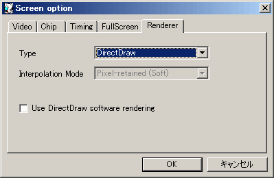

使用したいレンダリングエンジンを選択します。
| 項目名 | 内容 |
|---|---|
| DirectDraw | 画面描画にDirectDrawを使用します。拡大時の補間モード等の細かい設定が不要な場合に使用できます。 |
| Direct3D | 画面描画にDirect3Dを使用します。画面の拡大縮小時の補間モードを選択できるようになります。 |
画面の拡大縮小時の補間モードを設定します。Direct3Dを使用する場合のみ有効です。
| 項目名 | 内容 |
|---|---|
| Nearest Neighbor | 最近傍補間を使用します。周辺画素を考慮せずに最も近い位置の画素値が使用されます。 |
| Bilinear | バイリニア補間を使用します。周辺画素を考慮して線形補間された画素値が使用されます。 |
| Pixel-retained (Light) | 出来るだけピクセルの形状を維持しつつ拡大します（弱め）。スクリーンに完全に収まる範囲で最近傍補間での整数倍拡大を行った後、スクリーンサイズに合うようにバイリニア補間での拡大を行います。 |
| Pixel-retained (Soft) | 出来るだけピクセルの形状を維持しつつ拡大します（普通）。スクリーンサイズに近いサイズで最近傍補間での整数倍拡大を行った後、スクリーンサイズに合うようにバイリニア補間での拡大縮小を行います。 |
| Pixel-retained (Hard) | 出来るだけピクセルの形状を維持しつつ拡大します（強め）。スクリーンを完全に収められるサイズで最近傍補間での整数倍拡大を行った後、スクリーンサイズに合うようにバイリニア補間での縮小を行います。 |
チェックするとDirect3D排他モードを使用してフルスクリーン表示にします。最近のWindowsでは排他モードを使用しない方が安定します。Direct3Dを使用する場合のみ有効です。
チェックするとDirectDrawをエミュレーションモードにします。大抵の場合エミュレーションモードでは最近傍補間となるので、拡大縮小時にドット境界をくっきりさせたい場合に利用できます。DirectDrawを使用する場合のみ有効です。